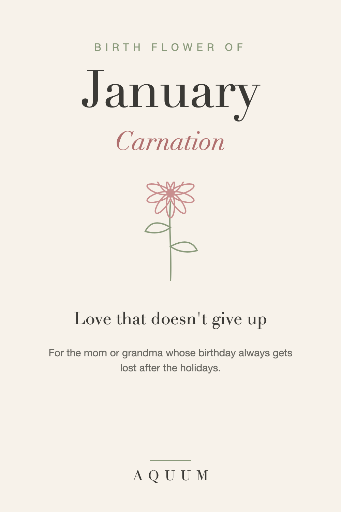

January Birth Flower: Carnation Meaning and Gift Ideas
2026-09-30
Written by the team behind Aquum, a small birth flower gift shop. How we make money.

January has two birth flowers: the carnation, which most lists name first, and the snowdrop, one of the first flowers to push through winter snow.
What the carnation means
The carnation stands for love that doesn't give up and deep admiration. It lasts longer in a vase than almost any other cut flower, which suits the meaning well.
Color changes the message:
- Pink: a mother's love. Carnations have been tied to Mother's Day since it began in the United States.
- Red: admiration and deep affection
- White: pure love and good luck
The snowdrop, January's second flower
The snowdrop means hope. It blooms when the garden still looks asleep, which makes it a quiet promise that better days are coming.
The January birthday problem
A January birthday lands right after the holidays, when everyone is tired, broke and done with gifts. It often gets a card and not much else.
A birth flower gift says: I didn't forget, and your day matters on its own.
Who the carnation suits
- A mother or grandmother born in January
- Anyone whose birthday always gets lost in the post-holiday slump
- Someone you admire and have never quite told
January birth flower gift ideas
- A carnation shirt, mug or tote they'll use well past January.
- A bunch of carnations in their favorite color, with a note about what the color means.
- Snowdrop bulbs to plant in fall, for a gift that blooms the next winter.
Shopping for a January birthday? See our January birthday gift ideas.